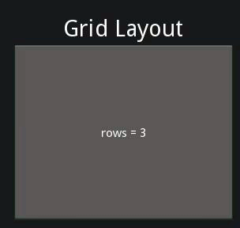

{kind=link}
Table Of Contents
Grid Layout¶
New in version 1.0.4.
The GridLayout arranges children in a matrix. It takes the available space and divides it into columns and rows, then adds widgets to the resulting “cells”.
Changed in version 1.0.7: The implementation has changed to use the widget size_hint for calculating column/row sizes. uniform_width and uniform_height have been removed and other properties have added to give you more control.
Background¶
Unlike many other toolkits, you cannot explicitly place a widget in a specific column/row. Each child is automatically assigned a position determined by the layout configuration and the child’s index in the children list.
A GridLayout must always have at least one input constraint: GridLayout.cols or GridLayout.rows. If you do not specify cols or rows, the Layout will throw an exception.
Column Width and Row Height¶
The column width/row height are determined in 3 steps:
- The initial size is given by the col_default_width and row_default_height properties. To customize the size of a single column or row, use cols_minimum or rows_minimum.
- The size_hint_x/size_hint_y of the children are taken into account. If no widgets have a size hint, the maximum size is used for all children.
- You can force the default size by setting the col_force_default or row_force_default property. This will force the layout to ignore the width and size_hint properties of children and use the default size.
Using a GridLayout¶
In the example below, all widgets will have an equal size. By default, the size_hint is (1, 1), so a Widget will take the full size of the parent:
layout = GridLayout(cols=2)
layout.add_widget(Button(text='Hello 1'))
layout.add_widget(Button(text='World 1'))
layout.add_widget(Button(text='Hello 2'))
layout.add_widget(Button(text='World 2'))
Now, let’s fix the size of Hello buttons to 100px instead of using size_hint_x=1:
layout = GridLayout(cols=2)
layout.add_widget(Button(text='Hello 1', size_hint_x=None, width=100))
layout.add_widget(Button(text='World 1'))
layout.add_widget(Button(text='Hello 2', size_hint_x=None, width=100))
layout.add_widget(Button(text='World 2'))
Next, let’s fix the row height to a specific size:
layout = GridLayout(cols=2, row_force_default=True, row_default_height=40)
layout.add_widget(Button(text='Hello 1', size_hint_x=None, width=100))
layout.add_widget(Button(text='World 1'))
layout.add_widget(Button(text='Hello 2', size_hint_x=None, width=100))
layout.add_widget(Button(text='World 2'))
- class kivy.uix.gridlayout.GridLayout(**kwargs)[source]¶
Bases: kivy.uix.layout.Layout
Grid layout class. See module documentation for more information.
- col_default_width¶
Default minimum size to use for a column.
New in version 1.0.7.
col_default_width is a NumericProperty and defaults to 0.
- col_force_default¶
If True, ignore the width and size_hint_x of the child and use the default column width.
New in version 1.0.7.
col_force_default is a BooleanProperty and defaults to False.
- cols¶
Number of columns in the grid.
Changed in version 1.0.8: Changed from a NumericProperty to BoundedNumericProperty. You can no longer set this to a negative value.
cols is a NumericProperty and defaults to 0.
- cols_minimum¶
List of minimum sizes for each column.
New in version 1.0.7.
cols_minimum is a DictProperty and defaults to {}.
- minimum_height¶
Minimum height needed to contain all children.
New in version 1.0.8.
minimum_height is a kivy.properties.NumericProperty and defaults to 0.
- minimum_size¶
Minimum size needed to contain all children.
New in version 1.0.8.
minimum_size is a ReferenceListProperty of (minimum_width, minimum_height) properties.
- minimum_width¶
Minimum width needed to contain all children.
New in version 1.0.8.
minimum_width is a kivy.properties.NumericProperty and defaults to 0.
- padding¶
Padding between the layout box and it’s children: [padding_left, padding_top, padding_right, padding_bottom].
padding also accepts a two argument form [padding_horizontal, padding_vertical] and a one argument form [padding].
Changed in version 1.7.0: Replaced NumericProperty with VariableListProperty.
padding is a VariableListProperty and defaults to [0, 0, 0, 0].
- row_default_height¶
Default minimum size to use for row.
New in version 1.0.7.
row_default_height is a NumericProperty and defaults to 0.
- row_force_default¶
If True, ignore the height and size_hint_y of the child and use the default row height.
New in version 1.0.7.
row_force_default is a BooleanProperty and defaults to False.
- rows¶
Number of rows in the grid.
Changed in version 1.0.8: Changed from a NumericProperty to a BoundedNumericProperty. You can no longer set this to a negative value.
rows is a NumericProperty and defaults to 0.
- rows_minimum¶
List of minimum sizes for each row.
New in version 1.0.7.
rows_minimum is a DictProperty and defaults to {}.
- spacing¶
Spacing between children: [spacing_horizontal, spacing_vertical].
spacing also accepts a one argument form [spacing].
spacing is a VariableListProperty and defaults to [0, 0].